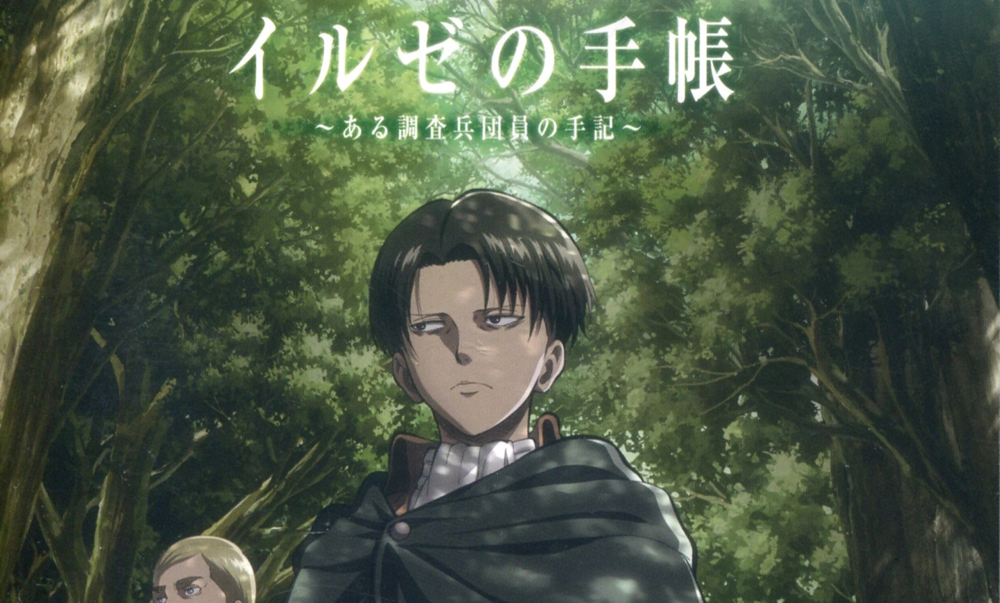

| Title | Ilse's Notebook |
|---|---|
| Japanese Title | Ilse no Techou |
| Type | OVA |
| Release Date | December 9, 2013 |
| Duration | Approximately 25 minutes |
| Based On | Attack on Titan manga |
| Studio | Wit Studio |
Ilse's Notebook follows the final moments of Ilse Langnar, a member of the Survey Corps who becomes separated from her comrades during an expedition outside the Walls.
While attempting to return to safety, Ilse encounters a strange Titan that does not behave like the others. Instead of immediately attacking her, the Titan speaks to her and appears to recognize her as a member of the "Subjects of Ymir."
Confused and frightened by the encounter, Ilse records everything she experiences in her notebook. Her notes later become an important discovery for the Survey Corps, providing valuable information about the Titans and their mysterious behavior.
The OVA explores one of the earliest clues that Titans may possess a connection to humanity and shows how the Survey Corps continues searching for answers about their true nature.